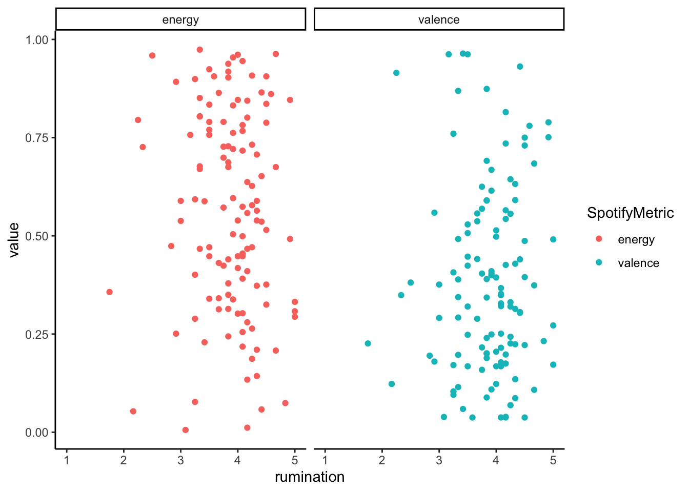

Last updated: 2019-11-18
Checks: 6 1
Knit directory: MusicEmoRegInRumination/
This reproducible R Markdown analysis was created with workflowr (version 1.4.0). The Checks tab describes the reproducibility checks that were applied when the results were created. The Past versions tab lists the development history.
The R Markdown is untracked by Git. To know which version of the R Markdown file created these results, you’ll want to first commit it to the Git repo. If you’re still working on the analysis, you can ignore this warning. When you’re finished, you can run wflow_publish to commit the R Markdown file and build the HTML.
Great job! The global environment was empty. Objects defined in the global environment can affect the analysis in your R Markdown file in unknown ways. For reproduciblity it’s best to always run the code in an empty environment.
The command set.seed(20190920) was run prior to running the code in the R Markdown file. Setting a seed ensures that any results that rely on randomness, e.g. subsampling or permutations, are reproducible.
Great job! Recording the operating system, R version, and package versions is critical for reproducibility.
Nice! There were no cached chunks for this analysis, so you can be confident that you successfully produced the results during this run.
Great job! Using relative paths to the files within your workflowr project makes it easier to run your code on other machines.
Great! You are using Git for version control. Tracking code development and connecting the code version to the results is critical for reproducibility. The version displayed above was the version of the Git repository at the time these results were generated.
Note that you need to be careful to ensure that all relevant files for the analysis have been committed to Git prior to generating the results (you can use wflow_publish or wflow_git_commit). workflowr only checks the R Markdown file, but you know if there are other scripts or data files that it depends on. Below is the status of the Git repository when the results were generated:
Ignored files:
Ignored: .DS_Store
Ignored: .Rhistory
Ignored: .Rproj.user/
Ignored: analysis/.DS_Store
Ignored: analysis/StudyOneClusterExplore_cache/
Ignored: docs/.DS_Store
Untracked files:
Untracked: analysis/StudyOneExplore.Rmd
Untracked: analysis/StudyOneQualCoding.Rmd
Untracked: analysis/StudyTwoClusterExplore.rmd
Untracked: analysis/StudyTwoModelExplore.Rmd
Untracked: analysis/StudyTwoMusicExplore.Rmd
Untracked: code/s1LyricsGet.R
Untracked: data/MusicEmotionRegulation_November17_Prolifc.csv
Untracked: data/MusicEmotionRegulation_November17_Prolifc_Lyrics.csv
Untracked: data/MusicEmotionRegulation_November17_Prolifc_Processed.csv
Untracked: data/MusicEmotionRegulation_November18_Prolific.csv
Unstaged changes:
Deleted: analysis/StudyOneClusterExplore.rmd
Modified: analysis/StudyOneConfirm.Rmd
Deleted: analysis/StudyOneModelExplore.Rmd
Deleted: analysis/StudyOneMusicExplore.Rmd
Modified: analysis/StudyTwoConfirm.Rmd
Deleted: analysis/StudyTwoExplore.Rmd
Deleted: analysis/StudyTwoQualCoding.Rmd
Modified: analysis/_site.yml
Modified: analysis/index.Rmd
Deleted: data/s1.csv
Deleted: data/s2.csv
Note that any generated files, e.g. HTML, png, CSS, etc., are not included in this status report because it is ok for generated content to have uncommitted changes.
These are the previous versions of the R Markdown and HTML files. If you’ve configured a remote Git repository (see ?wflow_git_remote), click on the hyperlinks in the table below to view them.
| File | Version | Author | Date | Message |
|---|---|---|---|---|
| Rmd | 9b1db26 | Joel Larwood | 2019-09-25 | wrongs links for study one fixed |
| html | 9b1db26 | Joel Larwood | 2019-09-25 | wrongs links for study one fixed |
| Rmd | 0b89245 | Joel Larwood | 2019-09-25 | study 3 exploration plots, update earlier spotify plots |
| html | 0b89245 | Joel Larwood | 2019-09-25 | study 3 exploration plots, update earlier spotify plots |
| html | 1eec503 | Joel Larwood | 2019-09-25 | Build site. |
| html | d153258 | Joel Larwood | 2019-09-25 | Build site. |
| html | 2e25e9c | Joel Larwood | 2019-09-25 | Build site. |
| Rmd | dedd590 | Joel Larwood | 2019-09-25 | Publish to study 2 explore |
| Rmd | cd4829d | Joel Larwood | 2019-09-23 | build control model |
| html | cd4829d | Joel Larwood | 2019-09-23 | build control model |
s1Explore <- read_csv(here::here("data", "MusicEmotionRegulation_November17_Prolifc_Processed.csv")) %>%
rowid_to_column("id")
s1Explore %>%
select(rumination:depression, valence, energy) %>%
psych::describe() %>%
knitr::kable()| vars | n | mean | sd | median | trimmed | mad | min | max | range | skew | kurtosis | se | |
|---|---|---|---|---|---|---|---|---|---|---|---|---|---|
| rumination | 1 | 166 | 3.795181 | 0.6685329 | 3.916667 | 3.8395522 | 0.6177500 | 1.25000 | 5.000 | 3.75000 | -0.7948481 | 0.9531734 | 0.0518882 |
| clarity | 2 | 166 | 5.759036 | 2.3694539 | 6.000000 | 5.7611940 | 2.9652000 | 2.00000 | 10.000 | 8.00000 | -0.0751803 | -1.1452697 | 0.1839053 |
| goals | 3 | 166 | 9.993976 | 2.7928415 | 10.000000 | 10.1044776 | 2.9652000 | 3.00000 | 15.000 | 12.00000 | -0.4103091 | -0.2086343 | 0.2167665 |
| impulse | 4 | 166 | 8.253012 | 3.0663111 | 8.000000 | 8.2611940 | 2.9652000 | 3.00000 | 15.000 | 12.00000 | -0.0522872 | -0.7696018 | 0.2379919 |
| strategies | 5 | 166 | 15.837349 | 5.2654439 | 16.000000 | 15.9328358 | 5.9304000 | 5.00000 | 25.000 | 20.00000 | -0.1590412 | -0.8352748 | 0.4086777 |
| nonaccept | 6 | 166 | 9.421687 | 3.1027670 | 10.000000 | 9.5597015 | 2.9652000 | 3.00000 | 15.000 | 12.00000 | -0.3271056 | -0.6771380 | 0.2408214 |
| ders | 7 | 166 | 49.265060 | 14.4247971 | 50.000000 | 49.6716418 | 14.8260000 | 16.00000 | 79.000 | 63.00000 | -0.2612273 | -0.4502448 | 1.1195814 |
| mesi | 8 | 166 | 26.638554 | 5.6762735 | 28.000000 | 27.1567164 | 4.4478000 | 2.00000 | 35.000 | 33.00000 | -1.2077010 | 2.4225767 | 0.4405643 |
| marsneg | 9 | 166 | 11.650602 | 4.2152213 | 11.000000 | 11.4179104 | 4.4478000 | 5.00000 | 25.000 | 20.00000 | 0.4819590 | -0.2454726 | 0.3271646 |
| depression | 10 | 156 | 7.326923 | 5.4502601 | 6.000000 | 6.8968254 | 5.9304000 | 0.00000 | 21.000 | 21.00000 | 0.5584965 | -0.6522505 | 0.4363700 |
| valence | 11 | 123 | 0.382948 | 0.2381195 | 0.344000 | 0.3636263 | 0.2431464 | 0.03760 | 0.964 | 0.92640 | 0.6568379 | -0.3519498 | 0.0214705 |
| energy | 12 | 123 | 0.562743 | 0.2559982 | 0.572000 | 0.5715253 | 0.3232068 | 0.00589 | 0.974 | 0.96811 | -0.2087455 | -0.9902402 | 0.0230826 |
The correlation matrix below suggests minimal no correlation between rumination, depression or emotion regulation and any of the musical variables.
corstars <-function(x, method=c("pearson", "spearman"), removeTriangle=c("upper", "lower"),
result=c("none", "html", "latex")){
#Compute correlation matrix
require(Hmisc)
x <- as.matrix(x)
correlation_matrix<-rcorr(x, type=method[1])
R <- correlation_matrix$r # Matrix of correlation coeficients
p <- correlation_matrix$P # Matrix of p-value
## Define notions for significance levels; spacing is important.
mystars <- ifelse(p < .0001, "****", ifelse(p < .001, "*** ", ifelse(p < .01, "** ", ifelse(p < .05, "* ", " "))))
## trunctuate the correlation matrix to two decimal
R <- format(round(cbind(rep(-1.11, ncol(x)), R), 2))[,-1]
## build a new matrix that includes the correlations with their apropriate stars
Rnew <- matrix(paste(R, mystars, sep=""), ncol=ncol(x))
diag(Rnew) <- paste(diag(R), " ", sep="")
rownames(Rnew) <- colnames(x)
colnames(Rnew) <- paste(colnames(x), "", sep="")
## remove upper triangle of correlation matrix
if(removeTriangle[1]=="upper"){
Rnew <- as.matrix(Rnew)
Rnew[upper.tri(Rnew, diag = TRUE)] <- ""
Rnew <- as.data.frame(Rnew)
}
## remove lower triangle of correlation matrix
else if(removeTriangle[1]=="lower"){
Rnew <- as.matrix(Rnew)
Rnew[lower.tri(Rnew, diag = TRUE)] <- ""
Rnew <- as.data.frame(Rnew)
}
## remove last column and return the correlation matrix
Rnew <- cbind(Rnew[1:length(Rnew)-1])
if (result[1]=="none") return(Rnew)
else{
if(result[1]=="html") print(xtable(Rnew), type="html")
else print(xtable(Rnew), type="latex")
}
}
s1Explore %>%
select(rumination:depression, valence, energy) %>%
as.matrix() %>%
corstars() %>%
knitr::kable()| rumination | clarity | goals | impulse | strategies | nonaccept | ders | mesi | marsneg | depression | valence | |
|---|---|---|---|---|---|---|---|---|---|---|---|
| rumination | |||||||||||
| clarity | 0.43**** | ||||||||||
| goals | 0.53**** | 0.72**** | |||||||||
| impulse | 0.45**** | 0.47**** | 0.60**** | ||||||||
| strategies | 0.58**** | 0.57**** | 0.79**** | 0.69**** | |||||||
| nonaccept | 0.49**** | 0.54**** | 0.71**** | 0.80**** | 0.79**** | ||||||
| ders | 0.59**** | 0.73**** | 0.88**** | 0.83**** | 0.93**** | 0.90**** | |||||
| mesi | 0.11 | 0.08 | 0.02 | 0.00 | 0.07 | 0.08 | 0.06 | ||||
| marsneg | 0.13 | 0.01 | 0.13 | 0.23** | 0.14 | 0.18* | 0.17* | -0.40**** | |||
| depression | 0.30*** | 0.55**** | 0.59**** | 0.49**** | 0.65**** | 0.59**** | 0.68**** | 0.05 | 0.10 | ||
| valence | 0.04 | 0.04 | 0.01 | 0.01 | 0.06 | 0.03 | 0.04 | 0.00 | 0.08 | 0.11 | |
| energy | -0.08 | 0.04 | -0.02 | -0.10 | -0.01 | -0.06 | -0.04 | 0.01 | -0.09 | 0.03 | 0.44**** |
While the correaltion suggests there isn’t a relationship between music listened to (in terms of valence and arousal) it may still be interesting to look at it further.
In terms of modelling a regression can be done to control for difficulties in emotion regulation and depression predicting valence and arousal. As can be seen in the table the measures have little predictive use.
tab_model(lm(valence~rumination+depression+mesi, data = s1Explore),
(lm(energy~rumination+depression+mesi, data = s1Explore)),
title = "Predictors of Musical valence and energy")| valence | energy | |||||
|---|---|---|---|---|---|---|
| Predictors | Estimates | CI | p | Estimates | CI | p |
| (Intercept) | 0.31 | -0.06 – 0.69 | 0.101 | 0.71 | 0.29 – 1.13 | 0.001 |
| rumination | -0.01 | -0.08 – 0.06 | 0.786 | -0.04 | -0.13 – 0.04 | 0.308 |
| depression | 0.01 | -0.00 – 0.01 | 0.227 | 0.00 | -0.01 – 0.01 | 0.565 |
| mesi | 0.00 | -0.01 – 0.01 | 0.609 | -0.00 | -0.01 – 0.01 | 0.972 |
| Observations | 118 | 118 | ||||
| R2 / R2 adjusted | 0.015 / -0.010 | 0.010 / -0.016 | ||||
From the plot we can see that this cannot be attributed to a lack of linear trend.
s1Explore %>%
select(id, rumination, energy, valence) %>%
pivot_longer(cols = energy:valence,
names_to = "SpotifyMetric") %>%
ggplot2::ggplot(aes(x = rumination,
y = value,
color = SpotifyMetric)) +
ggplot2::geom_point() +
ggplot2::facet_wrap(vars(SpotifyMetric)) +
ggplot2::xlim(1, 5) +
ggplot2::theme_classic()Warning: Removed 86 rows containing missing values (geom_point).
However, we also know that lyrics are important in sad music. Subsequently, I have passed the data through the genius package in this script and drew on work by Charlie Thompson. In this section I am interested in the proportion of sad lyrics used in the text. I have taken a bag of words approach, as has been done in the million song dataset.
The code for this can be expanded using the code button to the right.
s1Lyrics <- read_csv(here::here("data", "MusicEmotionRegulation_November17_Prolifc_Lyrics.csv")) %>%
drop_na(lyric) %>%
tidytext::unnest_tokens(word, lyric) %>%
anti_join(stop_words) %>% #only include meaningful words
mutate(StemWord = SnowballC::wordStem(word)) # this gets the stems of the word, I might want it later on but here for reference at the moment
sadwords <- get_sentiments(lexicon = "nrc") %>%
filter(sentiment == "sadness") %>%
mutate(sad = T,
StemWord = SnowballC::wordStem(word)) # this gets the stems of the word, I might want it later on but here for reference at the moment
S1SentimentJoin <- s1Lyrics %>%
left_join(sadwords, by = "word")
S1LyricSadness <- S1SentimentJoin %>%
group_by(track_uri) %>%
summarise(wordcount = n(),
sadwords = sum(sad, na.rm = T)) %>%
mutate(sadproportion = sadwords/wordcount)
S1ExploreMusicSentimentJoined <- s1Explore %>%
select(track_uri,
artist_name,
track_name,
danceability:time_signature,
rumination:depression) %>%
left_join(S1LyricSadness, by = "track_uri") %>%
drop_na(track_uri) %>%
mutate(DummyMode = if_else(mode == "major", 1, 0),
Song_Artist = glue::glue("{track_name} by {artist_name}"))Below the density plots for each of the musical characteristics can be seen
range<- function(x){
(x-min(x))/(max(x)-min(x))
}
plothist <- function(x)
S1ExploreMusicSentimentJoined %>%
select(danceability,
energy,
instrumentalness,
valence,
tempo,
duration_ms,
sadproportion) %>%
psych::describe() %>%
knitr::kable()
table(S1ExploreMusicSentimentJoined$mode)
major minor
77 46 as well as the correlations between the variables
S1ExploreMusicSentimentJoined %>%
select(danceability,
energy,
instrumentalness,
valence,
tempo,
duration_ms,
sadproportion,
rumination) %>%
corstars() %>%
knitr::kable()| danceability | energy | instrumentalness | valence | tempo | duration_ms | sadproportion | |
|---|---|---|---|---|---|---|---|
| danceability | |||||||
| energy | 0.34*** | ||||||
| instrumentalness | -0.41**** | -0.30*** | |||||
| valence | 0.61**** | 0.44**** | -0.30*** | ||||
| tempo | -0.07 | 0.31*** | -0.09 | 0.04 | |||
| duration_ms | -0.29** | -0.03 | 0.17 | -0.25** | 0.06 | ||
| sadproportion | -0.14 | 0.04 | -0.10 | -0.15 | 0.21* | -0.04 | |
| rumination | -0.06 | -0.08 | 0.00 | 0.04 | -0.14 | -0.02 | -0.11 |
sessionInfo()R version 3.6.1 (2019-07-05)
Platform: x86_64-apple-darwin15.6.0 (64-bit)
Running under: macOS Mojave 10.14.6
Matrix products: default
BLAS: /Library/Frameworks/R.framework/Versions/3.6/Resources/lib/libRblas.0.dylib
LAPACK: /Library/Frameworks/R.framework/Versions/3.6/Resources/lib/libRlapack.dylib
locale:
[1] en_AU.UTF-8/en_AU.UTF-8/en_AU.UTF-8/C/en_AU.UTF-8/en_AU.UTF-8
attached base packages:
[1] stats graphics grDevices utils datasets methods base
other attached packages:
[1] ggridges_0.5.1 tidytext_0.2.2 sjPlot_2.7.0
[4] xtable_1.8-4 Hmisc_4.3-0 Formula_1.2-3
[7] survival_2.44-1.1 lattice_0.20-38 forcats_0.4.0
[10] stringr_1.4.0 dplyr_0.8.3 purrr_0.3.3
[13] readr_1.3.1 tidyr_1.0.0 tibble_2.1.3
[16] ggplot2_3.2.1 tidyverse_1.2.1
loaded via a namespace (and not attached):
[1] TH.data_1.0-10 minqa_1.2.4 colorspace_1.4-1
[4] ellipsis_0.3.0 sjlabelled_1.1.0 rprojroot_1.3-2
[7] estimability_1.3 htmlTable_1.13.2 base64enc_0.1-3
[10] fs_1.3.1 rstudioapi_0.10 glmmTMB_0.2.3
[13] SnowballC_0.6.0 ggrepel_0.8.1 mvtnorm_1.0-11
[16] lubridate_1.7.4 xml2_1.2.2 codetools_0.2-16
[19] splines_3.6.1 mnormt_1.5-5 knitr_1.25
[22] sjmisc_2.8.1 zeallot_0.1.0 jsonlite_1.6
[25] workflowr_1.4.0 nloptr_1.2.1 ggeffects_0.11.0
[28] broom_0.5.2 cluster_2.1.0 compiler_3.6.1
[31] httr_1.4.1 sjstats_0.17.5 emmeans_1.4
[34] backports_1.1.5 assertthat_0.2.1 Matrix_1.2-17
[37] lazyeval_0.2.2 cli_1.1.0 acepack_1.4.1
[40] htmltools_0.4.0 tools_3.6.1 gtable_0.3.0
[43] glue_1.3.1 rappdirs_0.3.1 Rcpp_1.0.2
[46] cellranger_1.1.0 vctrs_0.2.0 nlme_3.1-140
[49] psych_1.8.12 insight_0.4.1 xfun_0.10
[52] lme4_1.1-21 rvest_0.3.4 lifecycle_0.1.0
[55] MASS_7.3-51.4 zoo_1.8-6 scales_1.0.0
[58] hms_0.5.0 parallel_3.6.1 sandwich_2.5-1
[61] TMB_1.7.15 RColorBrewer_1.1-2 yaml_2.2.0
[64] gridExtra_2.3 rpart_4.1-15 latticeExtra_0.6-28
[67] stringi_1.4.3 highr_0.8 bayestestR_0.2.2
[70] tokenizers_0.2.1 textdata_0.3.0 checkmate_1.9.4
[73] boot_1.3-23 rlang_0.4.1 pkgconfig_2.0.3
[76] evaluate_0.14 htmlwidgets_1.5.1 labeling_0.3
[79] tidyselect_0.2.5 here_0.1 plyr_1.8.4
[82] magrittr_1.5 R6_2.4.0 generics_0.0.2
[85] multcomp_1.4-10 pillar_1.4.2 haven_2.1.1
[88] whisker_0.4 foreign_0.8-71 withr_2.1.2
[91] nnet_7.3-12 performance_0.2.0 janeaustenr_0.1.5
[94] modelr_0.1.4 crayon_1.3.4 rmarkdown_1.16
[97] grid_3.6.1 readxl_1.3.1 data.table_1.12.2
[100] git2r_0.26.1 digest_0.6.22 munsell_0.5.0